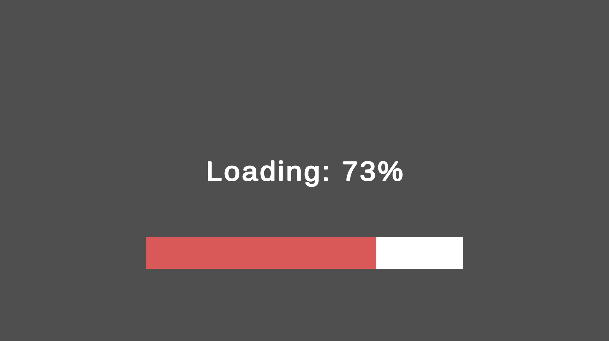

Loading Screens
The Character Creation Menu takes time to open since it needs to load all layer options. A loading screen can be added to hide the Character Creation Menu and give the player something to look at until the menu is ready.
How It Works
Just like the Character Creation Menu itself; loading screens are also modular.
The CCMLoadingScreenHandler component is the core of the loading screen. It should live outside of the loading screen contents but still within the Character Creation Menu contents since it will be in charge of enabling/disabling the loading screen.
- The
Loading Screen Handlerrequires a reference to the parent of the loading screen (Named Contents in all prefabs). - Optionally a loading finished delay can be added to wait a fixed amount of time after loading is finished before disabling the loading screen. This can be helpful to allow loading bars/text to catch up.
Prefabs
Tip
Prefabs Location: Prefabs > Character Creator > Loading Screen
Within the base Loading Screen folder is the Loading Screen Core prefab. This is the bare minimum required for a loading screen. It contains the Loading Screen Handler component and loading screen contents which only contains an image. No additional functionality is included.
Loading Screen Component Prefabs
Located in the /Loading Screen Components subfolder are prefabs which add additional functionality to the loading screen. These can be added to the Loading Screen Core prefab.
- Loading Progress Text - Adds progress text indicating how far loading has progressed.
- Loading Bar - Adds a progress bar which fills up as the loading progresses.
- Loading Repeating Text - Adds text which cylces through a list of pre-set strings.
Note
Make sure to set the reference to the Loading Screen Handler after instantiating any loading screen component prefabs.
Complete Loading Screen Prefabs
Located in the /Complete Loading Screens subfolder are prefabs which contain the Core Loading Screen plus other functionality.
- Loading Screen [+Text, Bar]
Loading Screen Components
Note
All loading screen components require a reference to the Loading Screen handler.
Additional components can be added to a loading screen to add functionality (Note:):
- CCMLoadingScreenProgressText
- Adds progress text indicating how far loading has progressed.
- Requires a
TMP Textcomponent reference. Loading Stringcan be modified to change the loading bar text. {0} will be replaced with the loading percentage.Smoothing Speedvalue can be changed to modify lerp speed through loading progress.
- CCMLoadingScreenProgressBar
- Adds a progress bar which fills up as the loading progresses.
- Requires an
imagecomponent reference - The
imagecomponentsImage Typeshould be set to filled. TheFill Amountcan then be modifed automatically to fill up the progress bar. Smoothing Speedvalue can be changed to modify loading bar lerp speed through loading progress.
- LoadingScreenRepeatingText
- Adds text which cylces through a list of pre-set strings.
- Requires a
TMP Textcomponent reference. - A list of strings containing the repeating text must be set.
- Repeating text cycle duration can be modified (Default = 0.5 seconds).